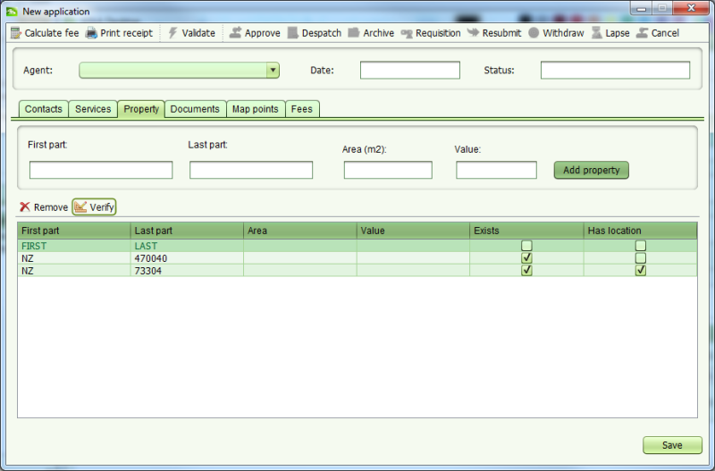

To verify the property details, use the Property tab to add a new property or select an existing property from the list and click the Verify button.

If the two part identifier for the property (i.e. first part and last part) exactly matches a BA Unit in the SOLA Database, the property will be flagged as Exists. If the property also has a geospatial definition, it will be flagged with Has Location. This feature is intended to help verify the property information provided with a new application.
Note that new property records added using the screen (e.g. FIRST LAST), are not added to the BA Unit table. This means a new property will not show as Exists if it is added to a second application. New property records are created when the property related service is completed and the application is approved.
Also See